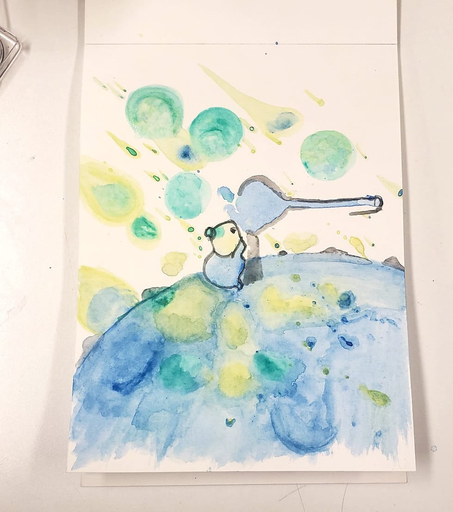

Portafolio
Bienvenidos a mi portafolio, un espacio donde reúno los proyectos que mejor representan mi
enfoque, estilo y evolución como diseñadora. Aquí encontrarás una muestra de mi trabajo en
mockups, diseño editorial y arte conceptual, cada uno desarrollado con dedicación y atención al
detalle. Más que un archivo de piezas, este portafolio es una forma de compartir mi manera de
entender y construir el diseño.
Proyectos destacados
Ícaro
Proyecto: Marca Ícaro - servicios de diseño
Como parte del Proyecto Parcial 1, se desarrolló la identidad de la marca Ícaro, concebida con el
objetivo de ofrecer servicios de diseño visual enfocados en áreas como mockups, diseño editorial y
arte conceptual. Aunque en un principio nació como un trabajo académico, a medida que avanzaba en su
desarrollo, me di cuenta de que tenía el potencial real de convertirse en una marca funcional y
disponible para el público.
El proceso de construir Ícaro ha sido, honestamente, uno de los más divertidos y gratificantes hasta
ahora. Desde elegir el nombre, diseñar el logotipo y sus variaciones, hasta crear el manual de
identidad visual, cada etapa me permitió experimentar, definir una voz creativa y darle vida a una
propuesta con intención. Ícaro no es solo un ejercicio de diseño: se ha convertido en una marca con
la que me he encariñado profundamente y que representa mucho de lo que quiero comunicar como
diseñadora.
One Sales Man
Proyecto: Mockup / Ilustración / Diseño
Como parte de un trabajo escolar, desarrollé la ilustración de una caja de cereal, cuyo objetivo
final era presentarla como un mockup visual. En ese momento, estaba completamente obsesionada con el
anime One Punch Man —una obsesión que, aunque ya se ha calmado un poco, sigue viva en mi corazón— y
pensé: ¿qué tan genial sería crear un cereal inspirado en ese universo? Honestamente, es algo que yo
definitivamente compraría si existiera en la vida real.
Desde el principio, quise que el diseño reflejara no solo el estilo visual del anime, sino también
algunas de las características más icónicas de sus personajes. Por ejemplo, incluí el amor de
Saitama por las ofertas y los descuentos, la forma tan dramática en que Genos monologa sobre todo,
los colores brillantes del mundo del anime y, como toque especial, un pequeño Saitama en el costado
de la caja, confundido por la información nutricional del cereal.
Aunque se trataba de un ejercicio académico, me sumergí completamente en el proceso creativo y me
divertí muchísimo jugando con referencias y detalles. Al final, más que un simple trabajo de clase,
este proyecto se convirtió en una pieza que disfruté profundamente desarrollar y de la que me siento
especialmente orgullosa y satisfecha.

El niño que mira cometas
Proyecto: Acuarelas / Ilustración / Arte conceptual
Existe una pequeña historia titulada “El niño que mira cometas”. Es la historia de un niño que vive
en la luna y, a través de su telescopio, observa lluvias de cometas todos los días. Aunque el relato
en sí me conmueve profundamente, lo que quiero destacar aquí es el trabajo de arte conceptual que
nació a partir de esa historia, realizado con acuarelas y mucha intuición. Esta pieza representa, de
forma muy cercana, lo que deseo transmitir a través de la marca Ícaro.
La ilustración nació de la espontaneidad, de un impulso creativo que encontró su rumbo en la
inspiración, en el detalle, en el cuidado que poco a poco fue tomando forma. Todos esos elementos
—la emoción, el color, la intención— se mezclaron en el momento justo para dar vida a una de las
piezas a las que más cariño le tengo.
No es perfecta, no está exenta de errores ni de áreas por mejorar. Pero eso también la hace valiosa.
Porque más allá de su técnica, esta obra cuenta una historia. Y si logra conmover, si logra ser
significativa o bella aunque sea para una sola persona, entonces para mí, eso ya es suficiente.

Ediciones Cori
Proyecto: Diseño
Ediciones Cori es una editorial ficticia desarrollada como parte de un proyecto escolar, pero con una
visión muy clara: publicar los libros que ellos mismos disfrutarían leer. Su enfoque principal se
centra en los géneros de misterio y fantasía, aunque mantienen la mente abierta para todo tipo de
historias que conecten con los lectores y tengan algo valioso que contar.
Uno de los aspectos que más disfruté de este proyecto fue el desarrollo de su identidad visual,
especialmente el diseño del logotipo. Quise capturar la esencia de la editorial —una mezcla de
imaginación, elegancia y enigma— a través de un venado estilizado, cuyos cuernos y orejas presentan
un degradado sutil que sugiere magia, transformación y sensibilidad narrativa.
Estoy especialmente satisfecha con el resultado, porque logré transmitir la vibra que imaginé para
Ediciones Cori: un espacio donde las historias tienen libertad de crecer y los libros se convierten
en portales hacia otros mundos.